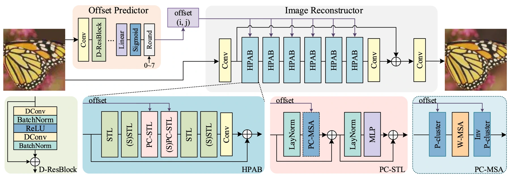
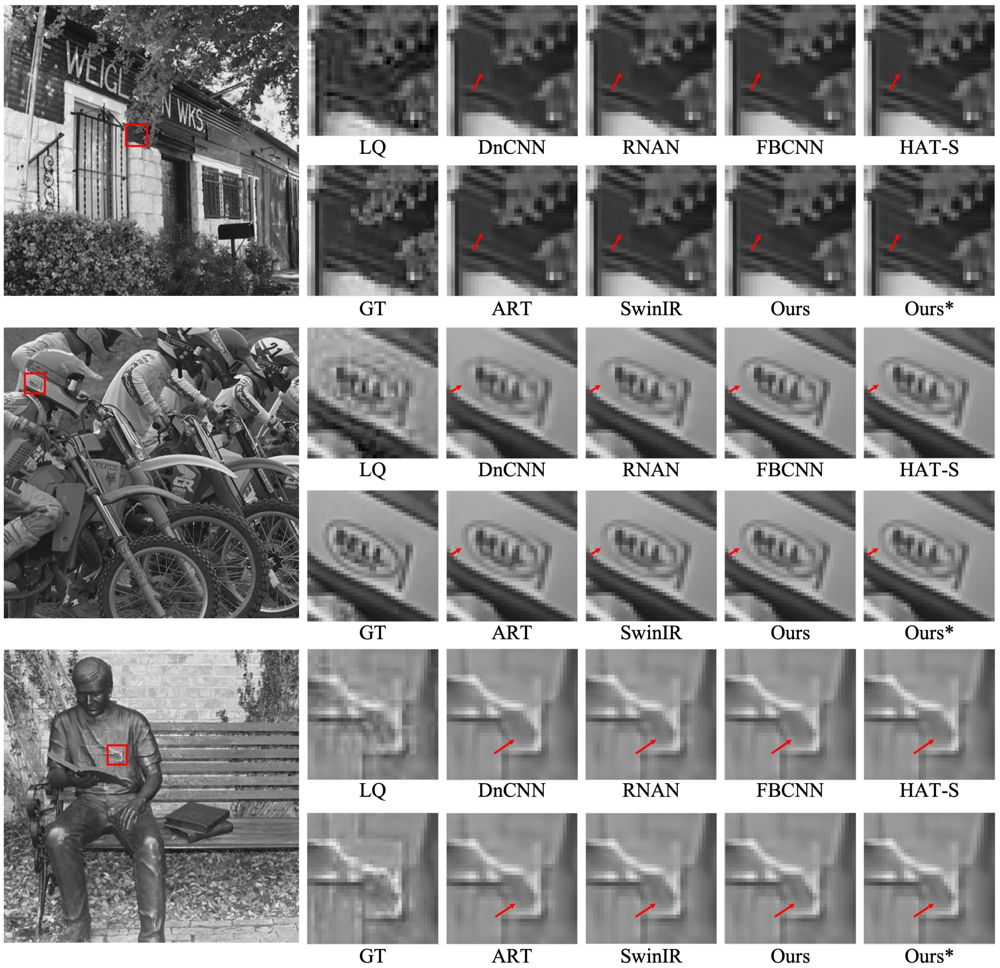

A photograph is usually compressed more than once. It is saved by a camera, cropped or edited, then saved again and uploaded, and each JPEG pass lays its own 8×8 block grid over the image. Nothing guarantees those grids line up.
一张照片通常会被压缩不止一次。相机保存一次，裁剪或编辑后再保存一次，然后上传；每一次 JPEG 都在图像上铺下自己的 8×8 块网格。没有任何机制保证这些网格彼此对齐。
When they do not, the artifact structure stops being uniform. The paper’s analysis counts up to four distinct artifact patterns inside a single 8×8 block, because a block of the second compression can straddle four blocks of the first, each with its own quantization history.
一旦不对齐，伪影结构就不再是均匀的。论文的分析指出，单个 8×8 块内最多可出现四种不同的伪影模式——因为第二次压缩的一个块最多可能横跨第一次压缩的四个块，而每个块各有自己的量化历史。
That observation is the whole method. Rather than treat double compression as harder single compression, OAPT estimates the offset between the two grids and groups pixels by the pattern they belong to, gaining more than 0.16 dB over the compared state of the art.
这一观察就是整个方法。OAPT 不去把二次压缩当作“更难的单次压缩”处理，而是估计两个网格之间的偏移，并按像素所属的模式对它们分组，从而相对所对比的最佳方法提升超过 0.16 dB。
A block of the second JPEG can straddle up to four blocks of the first, so a single 8×8 block may contain as many as four distinct artifact patterns — the degradation is piecewise, not uniform.
第二次 JPEG 的一个块最多可以横跨第一次的四个块，因此单个 8×8 块内可能同时存在四种不同的伪影模式——退化是分片式的，而非均匀的。
A compression offset predictor estimates the shift between the two grids; those estimates partition the features, and hybrid partition attention blocks combine window self-attention with sparse attention over the grouped features.
压缩偏移预测器估计两个网格之间的位移，据此对特征做分组；混合分区注意力块则把窗口自注意力与针对分组特征的稀疏注意力结合起来。
The pattern-clustering module is a plugin: it can be inserted into other transformer-based restoration models without added computation, and the gain over the compared state of the art exceeds 0.16 dB.
模式聚类模块是插件式的：可以不增加计算地嵌入其他基于 transformer 的恢复模型，相对所对比的最佳方法提升超过 0.16 dB。
Four patterns in one block一个块里的四种模式
JPEG splits an image into 8×8 blocks, applies a discrete cosine transform to each, then quantizes the coefficients. Quantization is what loses information, and it is applied per block, so the artifact pattern a pixel shows is determined by which grid cell it fell into.
JPEG 把图像切成 8×8 的块，对每块做离散余弦变换，再量化系数。真正丢失信息的是量化，而量化是按块进行的，因此一个像素呈现何种伪影，取决于它落进了哪个网格单元。
Apply the grid twice with a crop or shift in between and the second grid no longer coincides with the first. A block in the second pass can overlap four blocks from the first, each quantized independently, so four different artifact signatures coexist inside one block.
在中间发生裁剪或位移之后再次铺网格，第二个网格就不再与第一个重合。第二遍中的某个块可能与第一遍的四个块重叠，而每个块都是独立量化的——于是四种不同的伪影特征在同一个块内共存。
This is why models trained for single compression degrade. Their implicit assumption is that artifact structure is spatially uniform at the block scale, and that is exactly what a second misaligned pass breaks. Restoration requires knowing which pattern each pixel belongs to.
这正是针对单次压缩训练的模型会退化的原因。它们隐含假定伪影结构在块尺度上空间均匀，而这恰恰是第二次未对齐压缩所破坏的东西。要恢复图像，就必须知道每个像素属于哪一种模式。


Grouping by compression history按压缩历史分组
OAPT’s first module predicts the offset between the two compression grids. With the offset known, pixels inside any window can be partitioned by which block of the first compression they came from — that is, by their compression history rather than by their coordinates.
OAPT 的第一个模块预测两个压缩网格之间的偏移。偏移已知后，任意窗口内的像素就可以按它们来自第一次压缩的哪个块来划分——也就是按压缩历史划分，而不是按坐标划分。
The reconstruction network then uses hybrid partition attention blocks. Window-based self-attention handles ordinary local structure, while a sparse attention branch operates over the clustered pattern features, connecting positions that share an artifact signature however far apart they sit.
重建网络随后使用混合分区注意力块：基于窗口的自注意力处理常规局部结构，而一条稀疏注意力分支作用于聚类后的模式特征，把共享同一伪影特征的位置连接起来，无论它们在空间上相隔多远。
The two are genuinely complementary. Window attention is good at neighbourhoods and blind to the fact that two pixels on opposite sides of a block boundary may share a quantization history; sparse pattern attention captures exactly that and is useless for local texture.
两者是真正互补的。窗口注意力擅长邻域，却看不见“块边界两侧的两个像素可能共享同一段量化历史”这件事；稀疏模式注意力恰恰捕捉这一点，但对局部纹理毫无用处。
What offset-aware grouping recovers感知偏移的分组恢复了什么
Training synthesises the degradation rather than collecting it: JPEG, then a pixel shift, then JPEG again, with both quality factors sampled from 5 to 95 and offsets from zero to seven pixels. One model covers the whole range instead of one model per setting.
训练是合成退化而非采集退化：先 JPEG，再做像素位移，然后再 JPEG，两个质量因子均在 5 到 95 之间采样，偏移取 0 到 7 个像素。一个模型覆盖整个范围，而不是每个设置各训练一个。
That choice matters for the claim. Sampling both quality factors broadly forces the offset predictor to work both when the first compression was nearly lossless and when it was severe, which is the range real editing histories actually produce.
这个选择关系到论断的强弱。宽范围采样两个质量因子，迫使偏移预测器既要在首次压缩近乎无损时工作，也要在首次压缩很重时工作——而这正是真实编辑历史实际产生的区间。
The reported gain over the compared state of the art exceeds 0.16 dB on double-JPEG restoration, and the pattern-clustering component transfers: inserted into other transformer restoration models it improves them without extra computation. That transfer is the strongest evidence the clustering captures something real about the degradation rather than fitting this network.
在二次 JPEG 恢复上，相对所对比最佳方法的提升超过 0.16 dB；而模式聚类组件可以迁移：嵌入其他 transformer 恢复模型后同样带来改善，且不增加计算。这种迁移性是“聚类确实捕捉到了退化本身的某种真实结构，而非拟合了这个网络”的最强证据。


Degradation structure belongs in the architecture退化结构应当进入架构
The generalisable move is to expose the structure of the degradation to the attention mechanism. Pixels that look unrelated spatially can share a compression history, and once grouping reflects that, the model can learn relationships it otherwise could not.
可迁移的动作是：把退化的结构暴露给注意力机制。空间上看起来无关的像素可能共享同一段压缩历史；一旦分组反映了这一点，模型就能学到它本来学不到的关系。
The method is also correctly narrow. It models double JPEG specifically — two compression passes with one shift between them. Predictions are only as good as the offset estimator, and a history involving resizing, another codec or more passes introduces structure the model never saw.
这个方法也恰当地把范围收窄了。它专门建模二次 JPEG——两次压缩、其间一次位移。预测效果取决于偏移估计器的好坏；而涉及缩放、其他编码格式或更多次压缩的历史，会引入模型从未见过的结构。
For deployment that is a scoping question rather than a defect. Real pipelines have known, enumerable degradation histories, and the useful contribution is a method that turns one specific history into an architectural prior — at the cost of not generalising beyond it.
对部署而言，这是范围界定的问题，而不是缺陷。真实的流水线有着已知且可枚举的退化历史，真正有用的贡献是一种把某一种特定历史转化为架构先验的方法——代价是无法推广到它之外。
Paper & authors
OAPT: Offset-Aware Partition Transformer for Double JPEG Artifacts Removal
ECCV 2024
Cite this work
@misc{mo2024oaptoffsetawarepartitiontransformer,
title = {OAPT: Offset-Aware Partition Transformer for Double JPEG Artifacts Removal},
author = {Qiao Mo
and Yukang Ding
and Jinhua Hao
and Qiang Zhu
and Ming Sun
and Chao Zhou
and Feiyu Chen
and Shuyuan Zhu},
year = {2024},
eprint = {2408.11480},
archivePrefix = {arXiv},
primaryClass = {eess.IV},
url = {https://arxiv.org/abs/2408.11480}
}